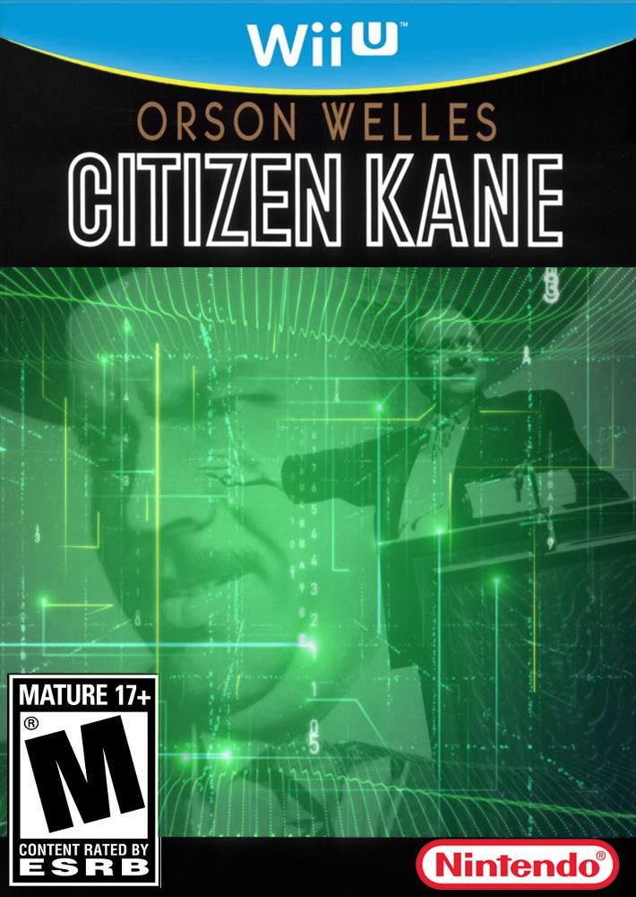

layout: true class: inverse --- class: middle, center @kevinwatters ## Jamming a Game in .limitwidth[] .titleimg[] --- class: center # I am @kevinwatters🏳‍🌈🏃🤓 ### startup engineer --- class: center # I am @kevinwatters🏳‍🌈🏃🤓 ### startup engineer turned VR and gamedev freelancer -- .pull-left[<video autoplay loop width="45%" src="images/blackout.mp4" type="video/mp4">] -- .pull-right[<video autoplay loop width="45%" src="images/zerodays2.mp4" type="video/mp4"> ] -- .pull-left[<img src="images/impossible-sculptor.gif" style="height: 189px">] -- .pull-right[] --- I wanted to make a game that was small and light and portable --  -- * but Unity is big and its WebGL compiles are very slow --- name: games-art <img src="images/citizen.png" style="max-width: 45%; float:right; padding-left: 50px;"> # why typescript? --- template: games-art ## games === art --- template: games-art ## ~~games === art~~ ## games == art -- ### but also... --- name: games-art-math  # why typescript? ## ~~games === art~~ ## games == art ### but also... ## games are systems -- ## games use math -- ### math is painful without strong typing -- (imo) ### NaN hell --- # Foster https://github.com/NoelFB/foster  --- # demo ### http://kevinw.github.io/games/traplands .center[ ] --- name: decorators # @decorator fun -- Decorators hang like shiny xmas ornaments off your code. -- ### First: get *experimental* in your `tsconfig.json`: ```json { "compilerOptions": { "target": "ES5", * "experimentalDecorators": true, * "emitDecoratorMetadata": true } } ``` --- template: decorators And then you can turn this: ```typescript class BusinessBusiness { valuation: number; } ``` --- template: decorators Into this: ```typescript class BusinessBusiness { * @Track valuation: number; } ``` -- And somewhere a function with ```typescript public static Track(target:any, key:string):void { const type = Reflect.getMetadata("design:type", target, key); console.log("thing named " + key + " has type " + type); } ``` --- template: decorators name: diamond ## they helped me solve the DIAMOND OF DEATH .pull-left[<img src="images/diamond-of-death.png">] -- .pull-right[ ### really what you want is Entities: * Grenade * RPG Components: * Physics * GunProjectile * Transform ] --- template: diamond .pull-right[ ] --- # Components in Traplands Alarm, AutoComponent, AutoRandom, AutoTimer, AutoTween, Awareness, Blockize, Burst, CausesDamage, ChildEntity, Collider, DiesOnCollision, Dragon, Emitter, Exit, Facing, Flip, Floats, Freezable, FreezingShot, GameEvents, GameEventsEmitter, Graphic, GraphicHitEffect, Health, HeartPickup, Hitbox, Hitgrid, HitgridWithHoles, KnockBack, Laser, MapLocation, Medusa, Mover, ParentEntity, ParticleAttractor, ParticleLoop, ParticleSystem, Pathfinder, PathfinderMap, Physics, Pickup, PlayerEffects, PlayerEffectsGraphic, Pushable, Rectsprite, RenderDepth, Rotater, Shadow, Shake, SoundEffect, Spikes, Sprite, SpriteAutoPlay, SpriteEvents, StaticGraphic, Tilemap, TopDownControls, TopDownDirection, Trail, Trigger, Tween, WaterFlow, Wobble, WobblyShaderParams, Wonder -- ### I was writing a lot ## Wanted to make writing them easy! --- class: smaller-code .pull-left[ ## Before ```typescript export class Mover extends Component { physics:Physics; * xSpeed:number; * ySpeed:number; constructor(xSpeed:number, ySpeed:number) { this.xSpeed = xSpeed; this.ySpeed = ySpeed; } * addedToScene() * { * super.addedToScene(); * this.physics = * this.entity.find<Physics>(Physics); * } update() { this.physics.speed.set( this.xSpeed, this.ySpeed); } setDelta(xSpeed:number, ySpeed:number) { this.xSpeed = xSpeed; this.ySpeed = ySpeed; } } ``` ] -- .pull-right[ ## After @decorators ```typescript @Component.register export class Mover extends Component<{ xSpeed:number, ySpeed:number}> { * @Component.require physics:Physics; update() { this.physics.speed.set( this.opts.xSpeed, this.opts.ySpeed); } setDelta(xSpeed:number, ySpeed:number) { this.opts.xSpeed = xSpeed; this.opts.ySpeed = ySpeed; } } ``` ] --- # Another example ## map data and types --- class: smaller-code .pull-left[ ### map_data.json ```json { "data":[440, 435, 435, 435, ...], "height":10, "name":"terrain", "opacity":1, "type":"tilelayer", "visible":true, "width":11, "x":0, "y":0 }, ``` ] -- .pull-right[ ### map_data.ts ```typescript interface TiledLayer { data: number[]; height: number; name: string; type: string; width: number; x: number; y: number; } ``` ] -- .pull-right[ ```typescript const layer = layerJSONData as TiledLayer; ``` ] -- <p style="clear:both;"></p> ### the boundary between typed and untyped land is for **you** to decide -- ## 🆒🆒🆒🆒🆒🆒🆒🆒🆒🆒🆒 ## 🆒🆒🆒🆒🆒🆒🆒🆒🆒🆒🆒 ## 🆒🆒🆒🆒🆒🆒🆒🆒🆒🆒🆒 --- ## using the typescript compiler programmatically ### (it's easy!) --- # what I had ```javascript var m = n(6) , g = n(9) , _ = n(7) , b = n(84) , g = function(t) { function g() { (0, o.default)(this, g); var t = (0, l.default)(this, (g.__proto__ || Object.getPrototypeOf(g)).apply(this, arguments)); return t.startPos = new _.Vector, t.intensity = 3, ``` ```yaml HeartPickup: type: "mimic" Wobble: {} Burst: template: "mimic_heart_ambient" rate: 0.0001 rangeX: 5 rangeY: 5 x: 9 maxParticles: 20 ``` --- # what I wanted ```javascript var m = n(6) , g = n(9) , _ = n(7) , b = n(84) , Wobble = function(t) { function Wobble() { (0, o.default)(this, Wobble); var t = (0, l.default)(this, (Wobble.__proto__ || Object.getPrototypeOf(Wobble)).apply(this, arguments)); return t.startPos = new _.Vector, t.intensity = 3, ``` ```yaml HeartPickup: type: "mimic" Wobble: {} Burst: template: "mimic_heart_ambient" rate: 0.0001 rangeX: 5 rangeY: 5 x: 9 maxParticles: 20 ``` --- # webpack.config.js ```javascript module.exports.plugins.push( new UglifyJSPlugin({ // ... mangle: { * except: ["Wobble"] } }) ); ``` --- # webpack.config.js ```javascript module.exports.plugins.push( new UglifyJSPlugin({ // ... mangle: { except: [ * "AutoComponent", "AutoRandom", "AutoTimer", "AutoTween", "Awareness", "Blockize", "Burst", "CausesDamage", "ChildEntity", "Collider", "DiesOnCollision", "Dragon", "Emitter", "Exit", "Facing", "Flip", "Floats", "Freezable", "FreezingShot", "GameEvents", "GameEventsEmitter", "Graphic", "GraphicHitEffect", "Health", "HeartPickup", "Hitbox", "Hitgrid", "HitgridWithHoles", "KnockBack", "Laser", "MapLocation", "Medusa", "Mover", "ParentEntity", ] } } } ``` --- # webpack.config.js ```javascript module.exports.plugins.push( new UglifyJSPlugin({ // ... mangle: { except: [ "Wobble", * /* TODO: when creating new components, add them here! */ ] } }) ); ``` --- # webpack.config.js ```javascript module.exports.plugins.push( new UglifyJSPlugin({ // ... mangle: { except: [ "Wobble", * /* GROSS: when creating new components, add them here! */ ] } }) ); ``` --- # the solution: -- ### the compiler knows all the Components! -- ```typescript import * as ts from "typescript"; ts.createProgram(["foo.ts"], options); ``` --- preprocess.ts --- # things I* wish I had known -- ### *a typescript noob -- ```json { "compilerOptions": { "strictNullChecks": true // ... } } ``` -- ## are there good typed serialization frameworks? --- # future plans -- * check out flow for comparison? -- * more levels -- * put an electron build on steam? -- * find a way to ship a lightweight iOS version? --- # thanks! ### @kevinwatters --